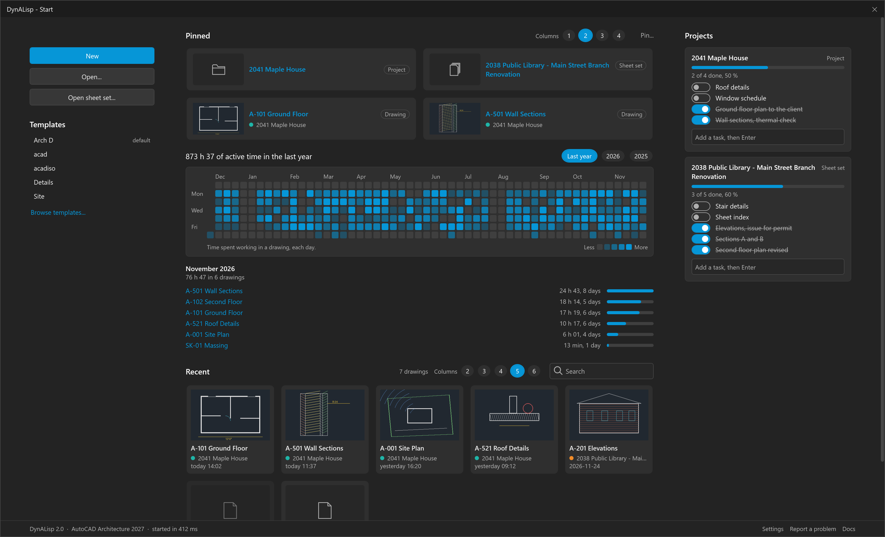

Page de démarrage
| Syntaxe | Start page dans Dyl-Settings |
| Fenêtres | Preview Picture |
| Fonctionne avec | Diagnostics – se lance pour Report a problem Paramètres – l'active (Start page) |
| Requis | L'onglet Démarrer d'AutoCAD activé |
Description
Votre travail d'un coup d'œil, dans l'onglet Démarrer d'AutoCAD : commencez un dessin à gauche, votre travail épinglé, votre temps et vos dessins récents au milieu, les tâches de vos projets à droite.

Utilisation
- Dans Dyl-Settings, activez Start page, et Active time pour compter votre temps. Cliquez Save.
- Commencez un dessin avec New, un gabarit ou Open....
- Cliquez droit sur un dessin récent pour l'épingler (Pin), lui, son jeu de feuilles ou son projet.
- Cliquez un dessin pour voir ses jours dans le graphique. Double-cliquez-le pour l'ouvrir.
- Tapez une tâche sous un projet et appuyez sur Entrée. Cochez-la une fois faite.
La page
- New, Open et les gabarits – commencer ou ouvrir un dessin.
- Pinned – jusqu'à 6 dessins, jeux de feuilles ou projets gardés sous la main.
- Active time – un carré par jour, plus foncé pour plus de temps. Cliquez un jour pour lister ses dessins.
- Recent – vos derniers dessins. Search en trouve un par son nom. Columns règle la taille des cartes.
- Projects – les tâches de chaque projet épinglé. Cliquez droit sur un projet et cochez Keep tasks with the project pour les partager avec votre équipe.
- Le pied de page – votre version, Settings, Report a problem et Docs.
Ses fenêtres
Preview Picture
Cadrez la partie d'une image à montrer comme aperçu d'un dessin sur la page de démarrage.

Temps actif
Un dessin compte pendant que vous y travaillez. Une pause de plus de 3 minutes ne compte pas. Votre temps reste sur votre ordinateur.
Aperçus
Cliquez droit sur un dessin pour changer son image :
- Choose preview picture... – n'importe quelle image, cadrée dans la fenêtre Preview Picture.
- Set preview area... – choisissez deux coins dans le dessin. L'image suit à chaque enregistrement.
- Use its own preview – revient à l'image gardée par AutoCAD.
Signaler un problème
Dites ce qui s'est passé, puis cliquez Open the issue. DynALisp ajoute un rapport de votre installation et l'ouvre sur GitHub, où vous le relisez avant de le soumettre. Appuyez sur Ctrl+V dans le ticket pour joindre le rapport. Rien n'est envoyé avant que vous soumettiez.